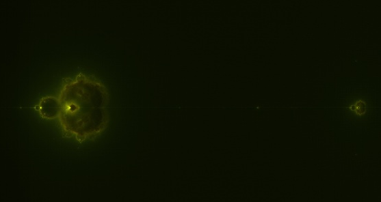
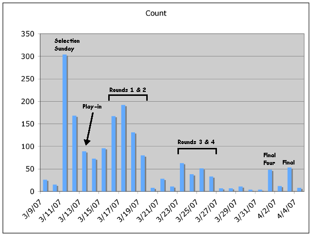
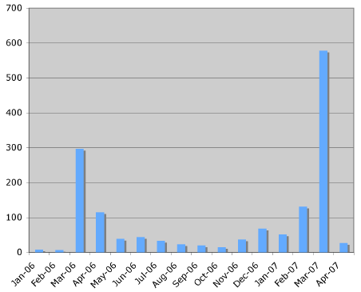

04.10.07
Posted in personal at 9:07 pm by danvk
I noticed my wallet was missing after racquetball this afternoon, and despite some semi-concerted efforts searching, I wasn’t able to find it. In retrospect, I should have checked my bank account immediately…
04-10 *DEBIT AUTHORIZATION
AT 23:02 ALMADEN CINEMA SAN JOSE CA $ 25.50
04-10 *DEBIT AUTHORIZATION
AT 22:38 Jack in the Box 34 San Jose $ 8.19
04-10 *DEBIT AUTHORIZATION
AT 16:03 SUNNYVALE SUNNYVALE CA $ 49.00
04-10 *DEBIT AUTHORIZATION
AT 15:31 TARGET SUNNYVALE CA $ 8.64
04-10 *DEBIT AUTHORIZATION
AT 15:15 SUNNYVALE SUNNYVALE CA $ 68.00
So the good news is he only got $200 (including ~$40 cash in the wallet) before I canceled the card. It gives me some peace of mind that his last purchase was movie tickets, since he won’t be doing too much purchasing inside the Almaden Cinema.
I’m OK considering this a $200 lesson learned. What’s most annoying is that now I need to go get my debit card and driver’s license replaced.
On the off chance that whoever’s got my “DANIEL H VANDERKAM” Mastercard is reading this, you’ve got the address to send my DL. Be a nice person. It only costs you 37 cents…
Permalink
04.06.07
Posted in programming, science, wikipedia at 11:50 pm by danvk
While reading Wikipedia’s Mandelbrot set article, I stumbled upon the exceedingly cool Buddhabrot, and the even cooler Nebulabrot:

I’ll write more about the math later, but what I find most interesting about it is how it naturally fills in the “boring space” inside the Mandelbrot set:

The interior of the Nebulabrot is also a fractal, as a zoom shows:

Those little buds are all Mandelbrots.
Being a CS-type, once I saw the definition, I immediately set out to render the most detailed Nebulabrot ever seen. It’s 10240×7680 and gorgeous. Here are some zooms (click for full-res versions):

The most “nebular” part

“Island universes” along the negative x-axis
Here’s a link to the full JPEG (4.3MB) and the full PNG (44 MB).
If you zoom all the way in, you’ll see some graininess, even in the PNG. This isn’t a compression artifact. It’s a hint of further structure. If I’d cranked up the dwell limit in my rendering, the noise would have been even more miniature Mandelbrot sets!
Update: MarkCC over at Good Math, Bad Math has a post about MapReduce that discusses the way I generated this at length.
Permalink
04.04.07
Posted in news, tv at 11:23 pm by danvk
I saw something incredibly strange on the online NewsHour tonight, at the 6:26 mark:

Why is PBS using a TiVo to record their own show? I just can’t fathom any way in which this makes sense. At least they gave it two thumbs up.
On a somewhat related note, I watch the NewsHour in QuickTime Player, since VLC’s streaming support isn’t quite there yet. QT Player is a terrible program. In order to go full-screen, you have to fork over $25 to Apple to upgrade to the “Pro version”. This has always struck me as idiotic, so I found this workaround hilarious. Apple forgot to seal this feature off from AppleScript, so if you run this…
tell application “QuickTime Player”
present front movie
end tell
… you’ll go fullscreen without upgrading!
Permalink
04.03.07
Posted in sports, web, wikipedia at 9:04 pm by danvk
A few weeks ago, I looked at the Wikipedia edits to the 2006 NCAA Tournament article. Here’s the edits chart for this year’s tourney, as promised.

For comparison, here’s the chart for last year:

The overall features are quite similar: the important dates stand out clearly in each chart. The total edit volume in 2007 is about double what it was in 2006, which is consistent with Wikipedia’s rapid growth. The edits were more front-loaded in 2007. Selection Sunday was far and away the busiest day, and the edits decreased steadily into the later rounds. This may indicate that fans contributed content relating to their favorite teams, and then stopped once that team was eliminated.
Shortly before last year’s tournament, I wrote a program to create a basic article for every NCAA tournament, from 1939-2005. The articles had a list of teams, locations, and a bracket. The idea was that, once the tournament got underway, other contributors would spruce the articles up a bit with some individualized content. Here’s a plot of the cumulative edits to the 1939-2005 tourney articles.

There are clear spikes during March Madness each season. Cumulative, there have been 1,493 edits to these articles by users other than myself, an average of 22/article. This is a bit skewed by the more recent tourneys, though. The median number of non-Dan edits is 10/article, which still isn’t bad. Wikipedia has its own flavor of the “release early and often” mantra from open source software. It’s not important that the article be perfect the first time around. It’s more important to just put something out there so that others can improve upon it.
Permalink
Posted in tv at 12:09 am by danvk
 What was New York thinking? Why’s she got to go with the boring ninja turtle? She and Mr. Chance were perfect for each other. You could tell she regretted it the second she let Chance go. And she was surprised that he was mad? Come on New York! I was “really feelin’” her and Chance.
What was New York thinking? Why’s she got to go with the boring ninja turtle? She and Mr. Chance were perfect for each other. You could tell she regretted it the second she let Chance go. And she was surprised that he was mad? Come on New York! I was “really feelin’” her and Chance.
I was happy to find out this past weekend that lots of my Rice friends were watching I Love New York as well. It really was a fun show. But I’ll bet it’s just the beginning. Here’s hoping for the greatest spinoff ever… Second Chance for Love!

Permalink
« Previous Page
Next entries »
{kind=link}
{kind=link}
{kind=link}
{kind=link}